You can use the Translation Wizard to perform actions that are related to importing/exporting translated SCALE screen resources. You can access the Translation Wizard from the Actions Menu of the System Text Editor Window.
Note: The system will retrieve the excel files from the import/export folder configured on the user profile. You cannot map a specific folder for translation wizard.
Multi-Language Support Process Summary
Localizing Values On Paperwork Documents
The following subjects are discussed in this topic:
Primary Procedure:
- How To Create And Import A New Language Into SCALE
Detailed Reference on Translation Wizard Options/Concepts:
- Translation Wizard Term Definitions
- Notes On Importing Excel Language Spreadsheets
- OPTION 1: Exporting Screen Values to an Excel Spreadsheet
- OPTION 2: Importing Your Custom Translated Screen Values from an Excel Spreadsheet
- OPTION 3: Importing Manhattan Associates Base Translated Screen Values
- OPTION 4: Copy Screen Values to a New Language
The steps in this procedure will not only result in a new Excel Spreadsheet which contains English text in the Base Text column and no text in the Custom Text, but also a new language loaded into the system and ready to use. The following steps take you end-to-end on how to create and import a new language into the application. For more specific details on translation wizard options/concepts, please see the reference section later in this topic.
1. Access the Translation Wizard (from the Actions Menu of the System Text Editor).
2. Use the wizard's Copy Screen Values To A New Language option to create the required database records for your new language.
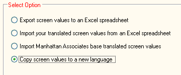
3. Use the wizard's Export Screen Values To An Excel Spreadsheet option to have the system generate an Excel spreadsheet with export the new language's screen resources. Note that you would want to export using the "All Values" setting since you are translating a new language (so all SCALE values will be represented in the spreadsheet).
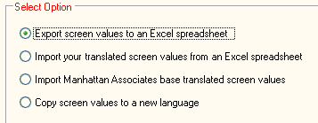
4. You can now enter the appropriate translated text resources into the Translation Text column of the language spreadsheet:
Spreadsheet (immediately after export):
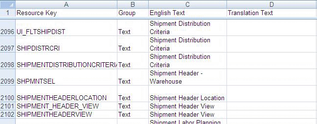
Spreadsheet (after new translated text resources have been entered):
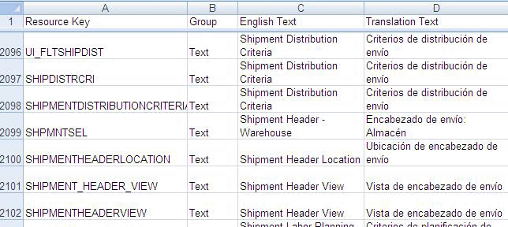
5. When finished entering your translated text, save your new language spreadsheet into the ILS/Languages directory on the application server.
6. Next, rename the spreadsheet file with a *.trp" extension (via a file rename action in Windows Explorer):
Before file rename:
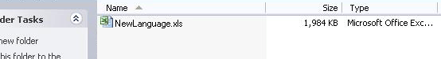
After file rename:
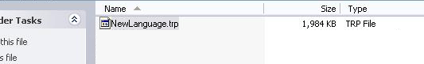
7. Now access the Translation Wizard (from the Actions Menu of the System Text Editor) in order to import this language spreadsheet into the application.
8. Use the wizard's Import Manhattan Associates Base Translated Screen Values to import the language spreadsheet into SCALE.
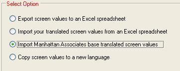
9. When finished importing the spreadsheet, the newly-translated text resources will be represented in the system (and viewable via the System Text Editor).
You need to be familiar with the following terms when using the Translation Wizard. Click on the name of a term to see its definition:
- This term refers to a field label, error message, etc., that is displayed in the application. Also referred to as a screen value.
- This term refers to the default text value that the system uses to display for fields, messages, etc.
- This term is used in the System Text Editor and the system database.
- Base Text resources are housed in the RESOURCE_FILE_BASE database table.
- This term refers to the user-customized text resource that the system uses to display for fields, messages, etc.
- This data is referred to as Custom Text when using the System Text Editor and the system database.
- If a Custom Text resource exists, the system will display it instead of the Base Text resource.
- In the System Text Editor, the Custom Text column will initially display the exact value as the Base Text column.
- Custom Text resources are housed in the RESOURCE_FILE_CUSTOM database table.
- This term refers to the English translations of resources that are in an Excel language spreadsheet.
- This term is synonymous with the term Base Text.
- These resources will ALWAYS contain English text.
- This term refers to alternate translations (of an English message or field) that are in an Excel language spreadsheet.
- This term is synonymous with the term Custom Text.
- These resources (when imported into the system via the Translation Wizard) will replace the Base Text resources (using import option #3), or the Custom Text resources (using import option #2).
- This term refers to the code identifier the system references when displaying a SCALE resource.
- You will encounter this term in the System Text Editor.
- This term refers to the code identifier the system references when displaying a SCALE resource.
- This term is synonymous with the term Key.
- You will encounter this term in an Excel language spreadsheet.
- This term indicates what type of resource a Key is.
- This term is synonymous with the term Resource Group.
- You will encounter this term on the System Text Editor and in an Excel language spreadsheet.
- This term indicates what type of resource a Key is.
- This term is synonymous with the term Group.
- You will encounter this term in the system database.
- This refers to an Excel spreadsheet file, which has been renamed with a *.trp file extension.
- This is the file type that the system imports using the Import Manhattan Associates Base Translated Screen Values option.
- This refers to the default file extension for an Excel spreadsheet (version 2003 or previous).
- This is the file type that the system imports using the Import Your Translated Screen Values From An Excel Spreadsheet option.
The following are examples of what the translation-related documents/databases mentioned in this topic look like. These are provided for reference purposes. Click on the text to see the example:
The following is how the text resources appear in the application's System Text Editor Window:
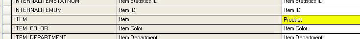
The following is how a .trp/.xls language file (Excel spreadsheet) appears:
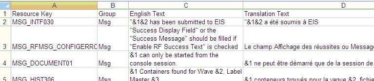
The following is how the RESOURCE_FILE_BASE database table appears:
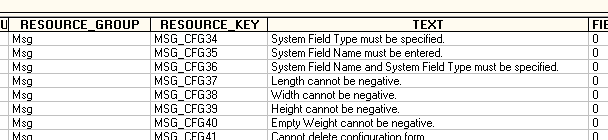
The following are miscellaneous points to consider when importing an Excel spreadsheet into SCALE using the Translation Wizard. Keep in mind that you are required to have Microsoft Excel (version 2003 or later) installed on the machine you are working with in order to use the Translation Wizard functionality.
- The Translation Wizard will error out during imports (Option #2 or #3) if any of the first four spreadsheet columns are missing. However, any extra columns that exist after the first four are ignored by the system during an import.
- You cannot import an Excel 2007 spreadsheet (*.xlsx) using the Translation Wizard. However, you can import a file created in Excel 2007 if you save it in "Excel 97-2003 Workbook" compatibility mode.
- The *.trp files for several languages are located on the application server in the ILS\Languages directory. These languages have not been loaded into the system by the installer (they will need to be imported into the application via the wizard).
- For the language spreadsheets that are shipped with the system, there are also XML versions of these language files. These are provided so you can import them into SCALE without requiring Microsoft Excel installed on your environments (you can use your database application, such as SQL Server Management Studio, to import the XML file).
- You can import the *.trp and *.xls files from anywhere on your machine (not just the ILS\Languages directory). Once you import the spreadsheet into the system, the system does not reference this file anymore.
- The system display language is based on what your language settings are on your Windows user profile. You can change this in the Control Panel | Regional and Language Options.
- This option exports a language's resources to an Excel spreadsheet file.
- Typically, you would use this option if you want to have a complete list of system resources, or a list of resources that have been added/changed since your last translated version.
- Once this spreadsheet is generated, you can translate these resources in the spreadsheet file and use the wizard to import the file back into the application.
- An Excel spreadsheet (.xls) that contains either all/part of the system's English resources.
- The spreadsheet will have four columns (Resource Key, Group, English Text, and Translation Text).
1. Access the Translation Wizard from the Actions Menu of the System Text Editor.
2. Choose the Export
Screen Values to an Excel Spreadsheet option, and press the Next
Button.
3. Use the Export Field to indicate which values you want to export:
- Choose ONLY VALUES NEEDING TRANSLATION to have the system
export only the resources that do not exist for a particular language. The
system will compare the values from a language's existing resources to the new
version's values. This option will export the delta resources (in English) in the English Text column of the spreadsheet, and the Translation Text column on the spreadsheet will be blank. Note that only the resources that have been added/changed will
be exported. Also, the system will export any custom resources that have
been created.
- Choose ALL VALUES to have the system export all
existing resources to a spreadsheet. Note that you are not allowed to
choose a language with this option, as the system will simply export all
of the English resources from the current version of SCALE. This will always export English resources. The Translation Text column on the spreadsheet will be blank.
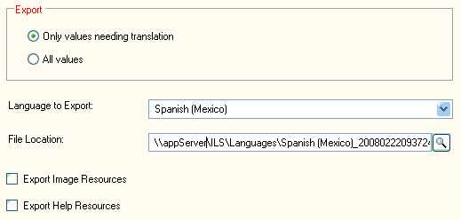
4. Use the Language To Export Field to specify the language for which you want to create resources. Keep in mind that this field will contain all the non-English languages that have been loaded on to your application database (you can use the wizard's Copy Screen Values To A New Language option to add other languages). Note that this option will only be available when using the "Only values needing translation" export option, because the system will be generating a spreadsheet that has the delta of resources between the current release's English text and the language you chose in this field.
5. Use the File Location Field to indicate the directory where you want the system to save the exported spreadsheet file.
6. Note that by default, the system will not export the IMAGE and HELP resources, because these values do not need to be translated. However, if for some reason you need to edit these resources, you can choose to export either of them by selecting the Export Image Resources and Export Help Resources checkboxes.
7. Press the Next
Button. The system will start the export process, and create the
new spreadsheet in the specified directory. If the system displays a "No records to export" error, this
means that the language you want to export has the exact same resources as the currently-installed application's resources.
- This option imports an Excel spreadsheet (.xls) that replaces the system's Custom Text resources with the spreadsheet's Translation Text resources. To perform this operation, you will need to have an Excel spreadsheet (with the extension of .xls) of the language you wish to import.
- The most common use for this option would be if you have been running the application in a certain language (for example, Spanish), and feel that some of the fields do not represent your warehouse's use of a specific term. So, you would have needed to export the Spanish language into an Excel spreadsheet (using the Export Screen Values To An Excel Spreadsheet option), and then add your new translations to the Translation Text column.
- When finished, you would then need to import these resources (using this import option) back into the system to actually see your new translated resources in use. Base Text resources WILL NOT be affected. The Translation Text resources (in the spreadsheet) are imported as Custom Text resources (in the application).
- This import option WILL NOT import in text that is in the spreadsheet's English Text resource column (it will leave those values as they exist currently).
- This import option WILL NOT import resources from a spreadsheet with an extension of .trp.
- You will be able to view a spreadsheet's Translation Text resources in SCALE.
1. Access the Translation Wizard from the Actions Menu of the System Text Editor.
2. Choose the Import
Your Translated Screen Values from an Excel Spreadsheet option
and press the Next Button.
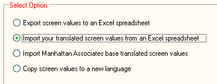
3. Use the Language
To Import Field to specify the language for which you want to import resources. Note that this field will contain all the non-English
languages that have been loaded on to your system database.
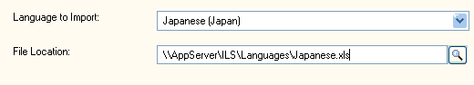
4. Use the File Location Field to indicate the directory from which you want to import a language spreadsheet file.
5. Press the Next Button.
6. Press the Finish Button. The system will import the resources from your spreadsheet, and place them in the database as Custom Text resources.
- This option imports an Excel spreadsheet's Translation Text resources as Base Text resources.
- You will need to have an Excel spreadsheet (with the extension of .trp) of the language you wish to import.
- The most common use for this option is if you want to load a previously-translated language spreadsheet.
- If you import a set of new Base Text resources into the system, any existing Custom Text resources will not be erased. Therefore, you can import release-to-release changes to Base Text resources without affecting any of the Custom Text resources you may have manually translated.
- This import option WILL NOT overwrite your Custom Text resources as they currently exist.
- Also, this import option WILL NOT import from a spreadsheet with an extension of .xls.
- You will be able to view new Translation Text resources in SCALE (for the resources where Custom Text resources do not already exist).
1. Access the Translation Wizard from the Actions Menu of the System Text Editor.
2. Choose the Import
Manhattan Associates Base Translated Screen Values option and press
the Next Button.
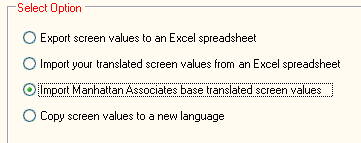
3. Use the Language
To Import Field to specify the language for which you want to import resources. Note that this field will contain all the
languages that are loaded into Microsoft Windows.
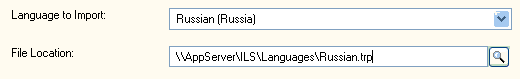
4. Use the File Location Field to indicate the directory from where you want to import a language spreadsheet file.
5.Press the Next Button.
6. Press the Finish Button. The system will import the resources from your spreadsheet, and place them in the database as Base Text resources.
- This copy option is used when you want to load a new language spreadsheet into the system; and therefore you first need to establish the language in the database.
- In the database, the system will copy the existing English Base Text resources into the new language as Base Text resources.
- This allows you to later add new text resources in the Custom Text column (using the System Text Editor), or the "Export" option described above to create a new spreadsheet (in this case, you would also have to import the translated spreadsheet back into the application).
- New language resources created in the database.
1. Access the Translation Wizard from the Actions Menu of the System Text Editor.
2. Choose the Copy
Screen Values To a New Language option and press the Next Button.
3. Use the Language
To Create Field to specify the language from which you want to
copy screen resources.
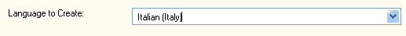
4. Press the Finish
Button. The system will first check to see if there are already
Base Text resources for this language:
- If Base Text resources exist, the system will display an error that the language
already exists. You cannot copy a language that already exists.
- If Base Text resources do not exist, the system will take all of the Base Text resources
and Custom Text resources for the English language and copy the records (changing the
language value on all of the base records).
For example, suppose you currently use English and want to create database resource
file entries for Polish. You would then choose Polish on the language selection
screen. When you click the Finish Button, the system will copy all of
the English database records and simply change the Resource_Language Field to Polish. The
result then would be Polish language database records that have English text. You
can then use the Custom Text resources to do a side-by-side translation of the
text using the System Text Editor, or export and enter new Translation Text in a spreadsheet.